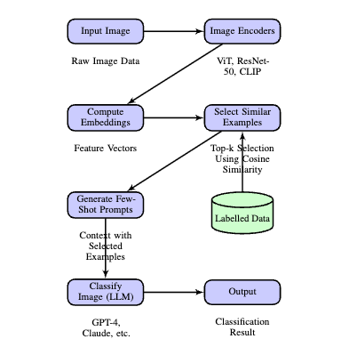
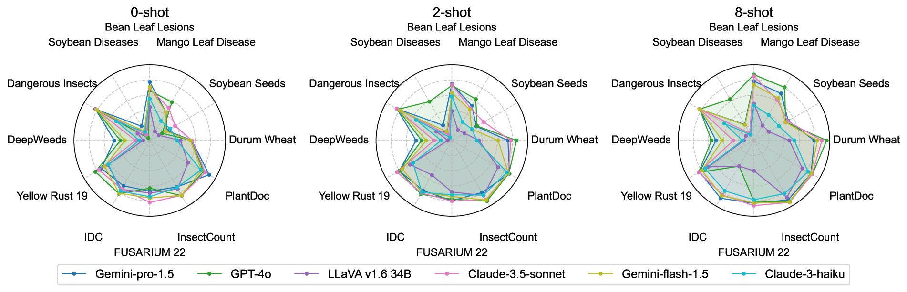
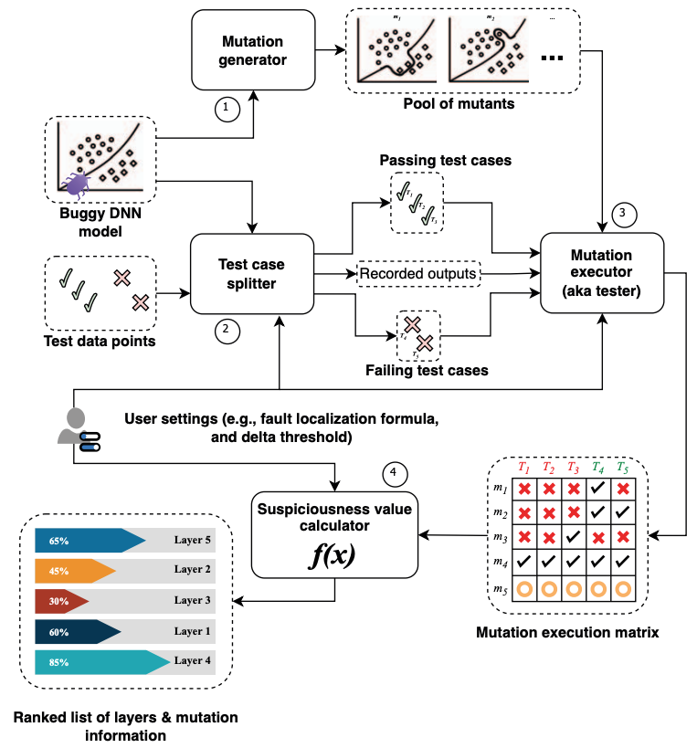
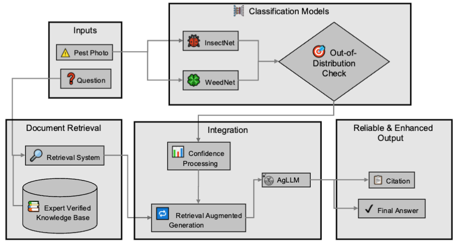
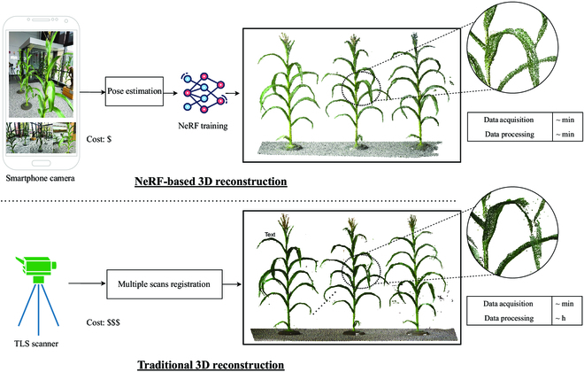

🏆 Latest Highlights
- [Feb 2025] 🎉 Starting internship at Intel.
- [Dec 2024] 🎓 Passed my PhD Preliminary Defense.
- [Nov 2024] Paper "Leveraging Vision Language Models for Specialized Agricultural Tasks" accepted to 2025 IEEE/CVF Winter Conference on Applications of Computer Vision (WACV)!
- [Mar 2025] Delivering Talk for Georgia Institute of Technology.
- [Apr 2024] Delivered Flash talk at TraC Day.
- [Oct 2023] Received Distinguished Paper Award at 38th IEEE/ACM International Conference on Automated Software Engineering (ASE).
|
Projects & Publications
I focus on developing AI systems that have real-world impact. My projects aim to bridge the gap between cutting-edge research and practical applications in agriculture and beyond.
|
|

|
Assisted Few-Shot Learning for Vision-Language Models in Agriculture
Muhammad Arbab Arshad, Talukder Zaki Jubery, Asheesh K Singh, ARTI SINGH, Chinmay Hegde, Baskar Ganapathysubramanian, Aditya Balu, Adarsh Krishnamurthy, Soumik Sarkar
NeurIPS Workshop on Adaptive Foundation Models, 2024
paper /
poster
- Proposed Assisted Few-Shot Learning approach to enhance VLMs for image classification with limited agricultural data.
- Optimized few-shot example selection using encoders (ViT, ResNet-50, CLIP) and cosine similarity.
- Improved performance in 6/7 agricultural stress phenotyping tasks, increasing avg. F1 score from 68.68% to 80.45% (ViT).
|
|

|
AgEval: A Benchmark for Vision Language Models in Agriculture
Muhammad Arbab Arshad, et al.
WACV, 2025
project page /
paper /
Video /
poster
- Developed AgEval, a 12-task benchmark for evaluating Vision Language Models (VLMs) in agricultural plant stress phenotyping.
- Assessed zero-shot and few-shot (up to 8-shot) in-context learning performance of models like Claude, GPT, Gemini, and LLaVA.
- Established baselines, analyzed VLM adaptability, and achieved up to 73.37% F1 score with minimal examples.
|
|

|
Mutation-based Fault Localization of Deep Neural Networks
Ali Ghanbari,
Deepak-George Thomas,
Muhammad Arbab Arshad,
Hridesh Rajan
38th IEEE/ACM International Conference on Automated Software Engineering (ASE), 2023 (Distinguished Paper Award)
paper
- Proposed deepmufl, a novel mutation-based technique for fault localization in DNNs, outperforming prior static and dynamic methods.
- Contributed to evaluation by executing automated repair tools on GPU clusters, optimizing parallel execution (16x speedup across 40 clusters).
- Deepmufl localized 53/109 real-world bugs to the top-1 ranked layer in evaluation.
|
|

|
Agricultural Large Language Model (AgLLM)
Muhammad Arbab Arshad, et al.
project page / poster
Developed AgLLM, a system providing precise, regionally-appropriate agricultural recommendations for 90 pest species across North America, Africa, and India. Integrates deep learning vision models (InsectNet/WeedNet) with a species-specific, region-aware Retrieval Augmented Generation (RAG) pipeline using expert-verified data, significantly improving information relevance.
Core recommendation engine in use at: Pest-ID
|
|
|
The Kingland Data Refinery Platform
Contribution via Summer Software Engineering Internship 2023
As an intern, contributed to this cloud-based data & analytics platform by:
- Implementing auto-scaling AWS Fargate deployment and developing an end-to-end stress testing pipeline (JMeter/Blazemeter).
- Customizing the GitLab CI/CD pipeline to integrate testing seamlessly.
- Received recognition in two consecutive sprints for implementing comprehensive load testing frameworks that ensured application stability under high-stress conditions.
|
|

|
Evaluating Neural Radiance Fields for 3D Plant Geometry Reconstruction in Field Conditions
Muhammad Arbab Arshad, Talukder Jubery, James Afful, Anushrut Jignasu, Aditya Balu, Baskar Ganapathysubramanian, Soumik Sarkar, Adarsh Krishnamurthy
Plant Phenomics, 2024
paper / poster
- Evaluated Neural Radiance Field (NeRF) techniques for 3D plant reconstruction in varied environments (indoor to field).
- Achieved 74.6% F1 score in challenging outdoor field conditions compared to LiDAR ground truth.
- Developed an early stopping optimization technique reducing NeRF training time by ~50% with minimal accuracy loss (7.4% F1 reduction).
|
|
|
Intel California, USA
Graduate Software Engineering Intern
Feb 2025 - Present
Applying Computer Vision and Large Language Models to UI automation, graphics validation, and hardware enablement.
|
|
|
AI Institute for Resilient Agriculture (AIIRA), Iowa State University Iowa, USA
Ph.D. Candidate and Research Assistant
Jan 2023 - Present
Developing AI applications (LLMs, CV, NeRFs) for agricultural challenges as part of doctoral research.
|
|
|
Kingland Systems Iowa, USA
Software Engineering Intern
May 2023 - Aug 2023
Contributed to cloud deployment, CI/CD enhancement, and load testing for the Data Refinery Platform.
|
|
|
Laboratory for Software Design, Iowa State University Iowa, USA
Research Assistant
Jan 2022 - Aug 2022
Contributed to research on mutation-based fault localization for Deep Neural Networks (ASE '23 Distinguished Paper).
|
Feel free to steal this website's source code. Do not scrape the HTML from this page itself, as it includes analytics tags that you do not want on your own website — use the github code instead. Also, consider using Leonid Keselman's Jekyll fork of this page.
|
|
{kind=link}